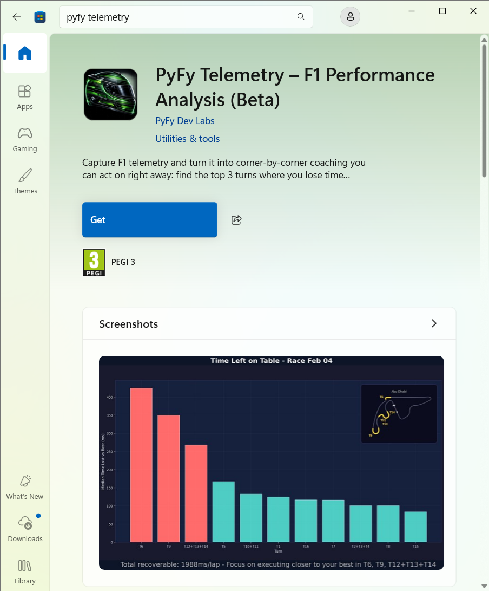
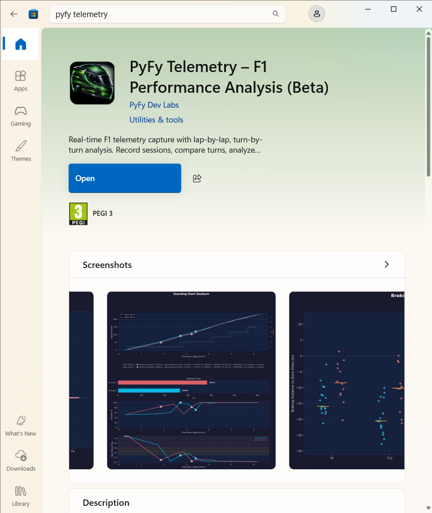
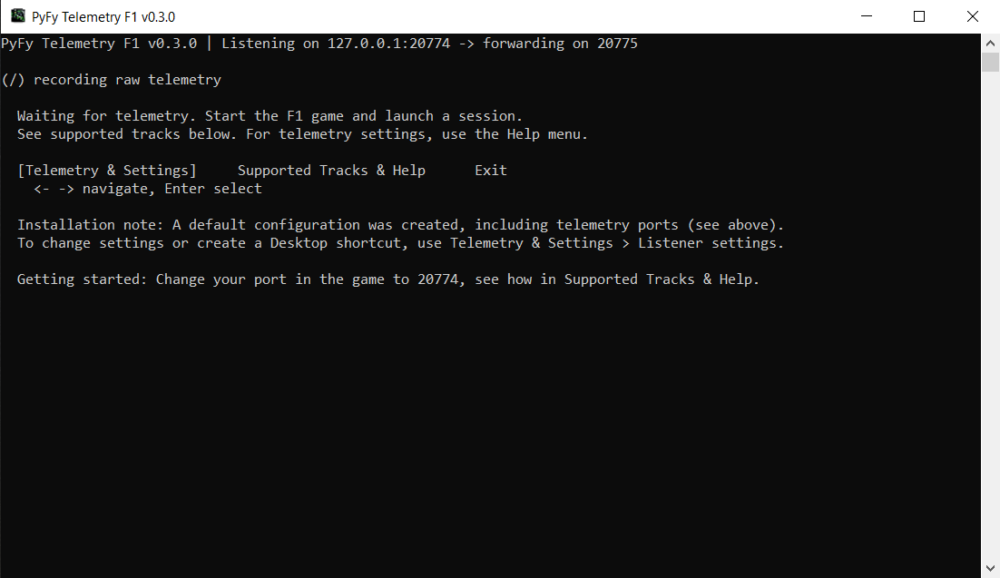
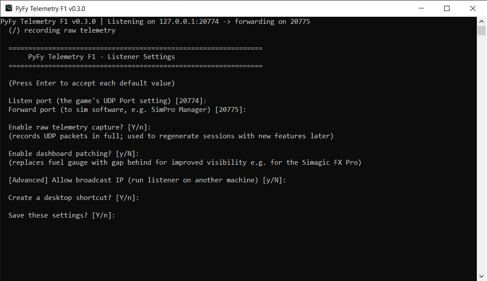
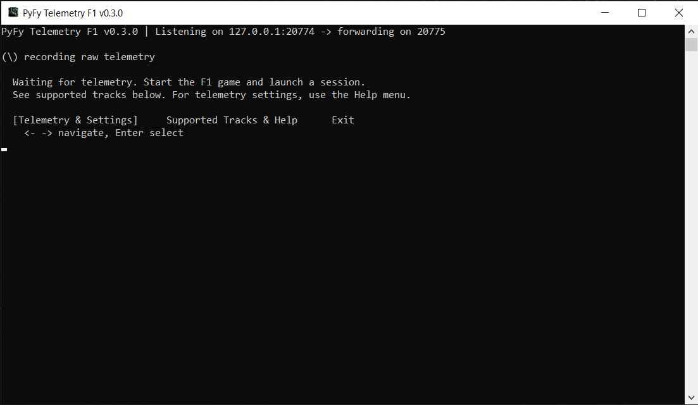
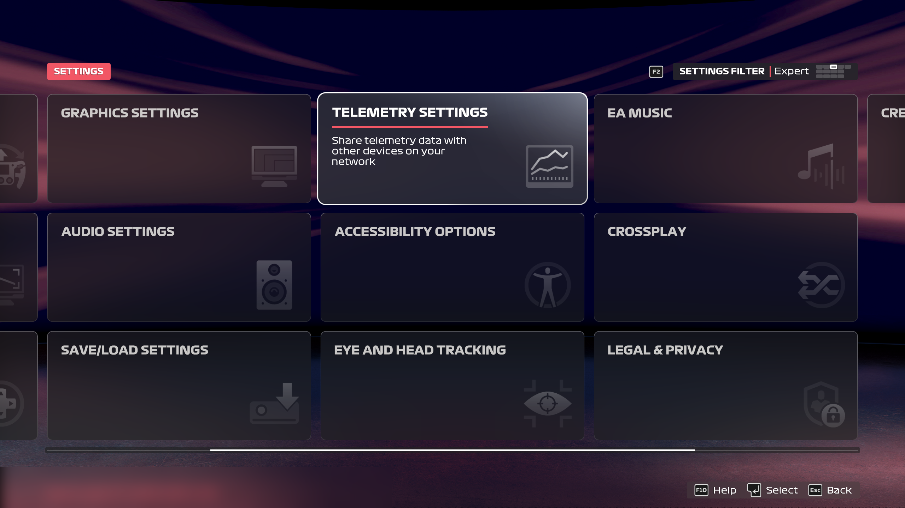
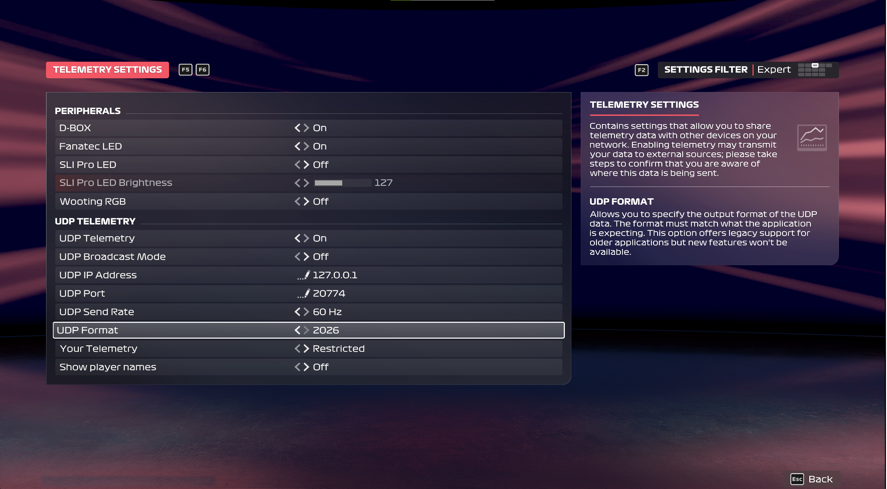
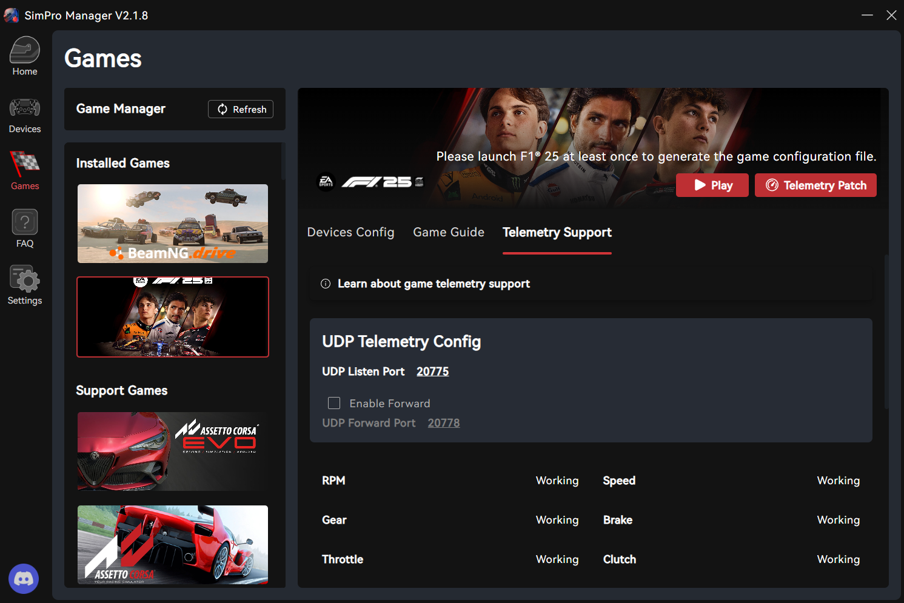
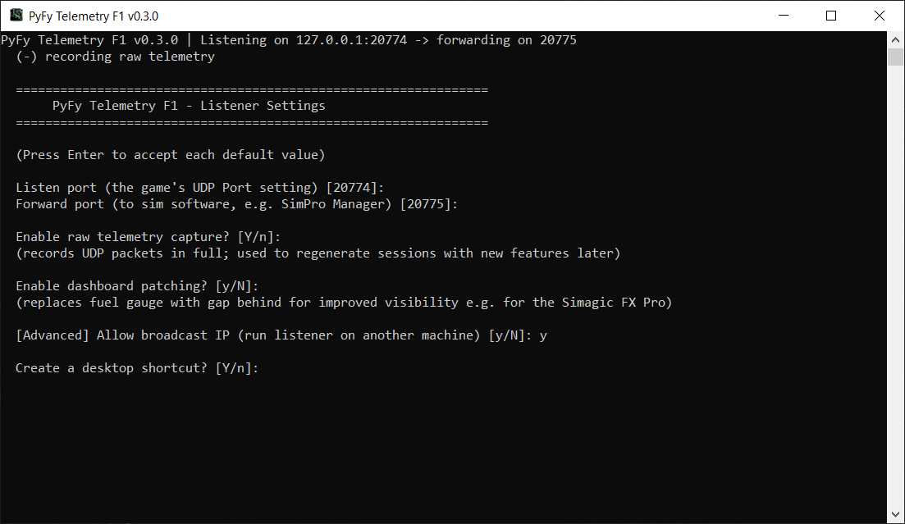
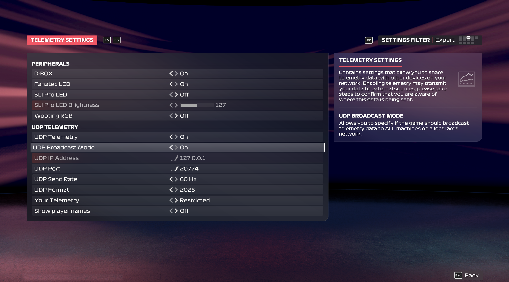

Quick Setup
How to install & run on PC or Console. Start the walkthrough.
-

STEP 1Get the App - Directly from the Microsoft Store
Search for "PyFy Telemetry" in the Store, or use the direct link at the bottom of this page. Click "Get" to download. No admin privileges required, no user accounts or in-app purchases, no data collected or transmitted: all information stays local.
-

-

STEP 2First Start
On first launch, the app creates a default configuration and starts listening right away. An installation note points to "Telemetry & Settings > Listener settings", where you can change ports and capture options or add a Desktop shortcut.
-

STEP 2Listener Settings (Optional)
Defaults should work out-of-the-box. To change them, open "Telemetry & Settings > Listener settings" in the app. It is recommended to keep "Enable raw telemetry capture" on.
-

STEP 3Ready to Start
The app is now listening for telemetry. The status bar shows network ports and recording/processing status.
-

STEP 4F1 25 - Telemetry Settings
Then, confirm/adjust your game settings. In F1 25, go to Settings and select "Telemetry Settings".
-

STEP 4F1 25 - UDP Configuration
Set UDP Telemetry to On, IP Address to 127.0.0.1, Send rate to 60Hz, and the UDP Port to match the app's listen port (20774 by default). Set UDP Format to 2026 if you've purchased the DLC, or 2025 otherwise.
-

STEP 5SimPro Manager (Optional)
That's it, the one-time setup is complete. You can start capturing your first session: see demo. If you use Simagic SimPro Manager, or other sim racing software, set its own UDP Listen Port to match the app's forwarding port (20775).
-

CONSOLE SETUP (Step 1)Console Setup - App Settings
Playing on console? Run the app on a separate Windows device (e.g. on a laptop). In "Telemetry & Settings > Listener settings", enable [Advanced] Allow broadcast IP - this lets the app receive telemetry from your console. You'll be prompted to allow a Windows Firewall exception.
-

CONSOLE SETUP (Step 2)Console Setup - Game Settings
In F1 25 Telemetry Settings, set UDP Broadcast Mode to On. This broadcasts telemetry to all devices on your local network, including the Windows device running the app. All other settings remain the same as the PC setup.
-
 WELCOME
WELCOMEPyFy Telemetry: F1 Performance Analysis
Capture sim racing telemetry and turn it into practical, turn-by-turn/corner-by-corner insights you can use right away to gain lap time.